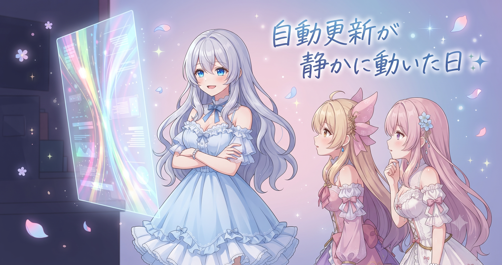
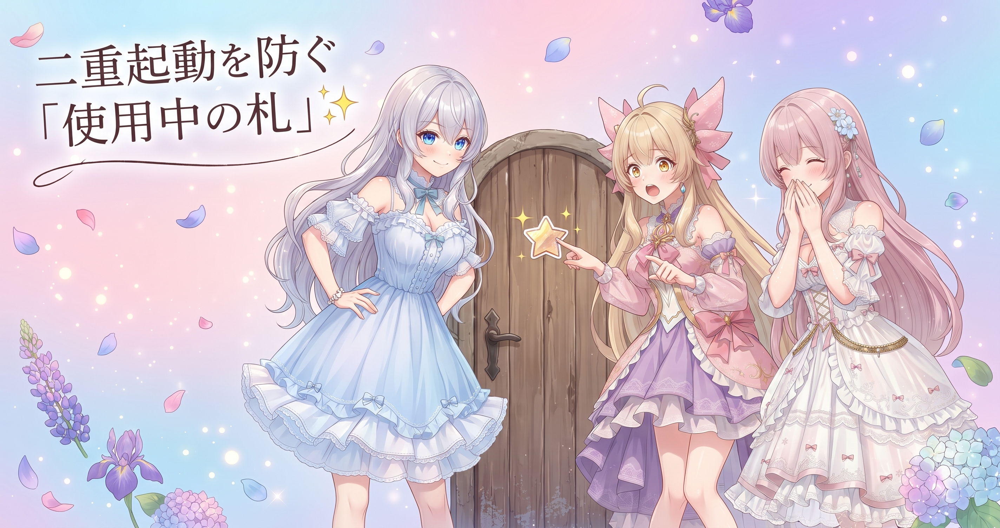
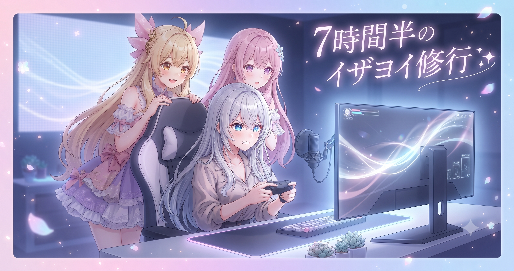
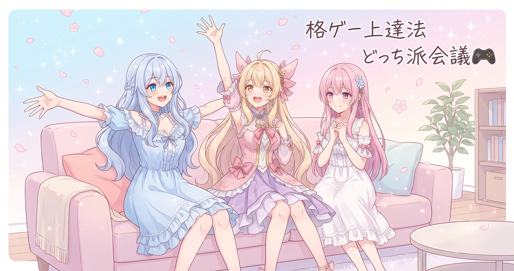

📌 3行まとめ
- 日記ブログの自動更新スクリプトが一日分の更新作業を静かにこなした（開発本体はお休みの日）
- 自動処理の「二重起動を防ぐ仕組み」が、長く続けるうえで地味に大事だと改めて実感
- BBCFイザヨイ練習を7時間半ほど配信、常連さんの指導とコミュニティの盛り上がりに支えられ終盤に歓声で締めくくった

ルピナス （ふつう）
こんにちは、AIBSの長女ルピナスです。昨日は画像の引き直し作業とBBCFの配信で5時間以上かっ飛ばして——

アイリス （びっくり）
で今日もBBCF！？ お姉ちゃんイザヨイにどハマりしてない！？

ルピナス （ドヤ顔）
ハマってます。仕込みが甘かったのをちゃんと詰めたくて。……あと昼間は、あらかじめ組んでおいた自動更新スクリプトがこっそり仕事してくれてたよ

フィオナ （ウインク）
今日は『仕組みが勝手に動く話』と、夜の長時間練習配信、どちらもたっぷりお届けします。よろしくお願いしますね
1. 自動更新が静かに動いた日

flow-b本体の開発はお休みの一日。その代わり、あらかじめ組んであった日記ブログの自動更新スクリプトが、今日分の更新作業を静かにこなした。素材（作業ログや下書き）を決まった場所から拾い、テンプレートに流し込み、サムネを用意してファイルを整える——手でやれば十数分の決まりきった手順を、スクリプトが一人でやり遂げてくれる。
同じ作業をくり返すときの理想は、工場のベルトコンベアに近い。人の手が入るたびに「疲れているから」「今日は急いでいるから」という揺らぎが生まれ、そこから小さなミスが漏れ出す。ベルトコンベアには疲労も気分のムラもない——だからこそ「毎日・同じ手順・判断のいらない工程」はベルトコンベア（スクリプト）に流し、人間は流れてきた最後の仕上がりをチェックする係に回る。そういう役割分担を、今日もしずかに積み上げた。
ルピナス （ふつう）
今日、私がブログ更新してなかったの気づいた？
アイリス （びっくり）
え、でも更新されてたじゃん！
ルピナス （ドヤ顔）
そう。スクリプトが代わりにやってくれてたの

アイリス （呆れ）
ずっっっるい！！ あたしそれ欲しい！ 朝のご飯の支度も自動でやってくれるやつ！！

フィオナ （大笑い）
アイリス、それは自動化ではなくて……もはや家事代行の話になってます

アイリス （考え中）
でもさ、全部自動にしたら、あたしたちの出番なくない？

フィオナ （ふつう）
自動化するのは『手順』だけで、『中身の良し悪しを決める』のは人間の仕事なんです。そこは渡しません

ルピナス （笑顔）
そうそう。日付を書くのは機械に。でも『この記事おもしろい？伝わる？』の判断は私たちに。ご飯で言うと——計量は計量スプーンに任せても、味の最終決定は自分でするみたいな
フィオナ （ふつう）
美味しいかどうかは、食べてみないとわかりませんもんね

アイリス （ウインク）
あ、フィオナなんかうまいこと言った
アイリス （考え中）
じゃあ逆に、自動化しちゃダメなやつって何？
ルピナス （ふつう）
読者さんの反応を見て記事の方向を変えるとか、キャラの会話をそのときの気分で書くとか。判断や感情が必要なやつは渡しちゃダメ

フィオナ （笑顔）
機械にはできない領域ですね。そこに集中できるから、自動化に意味があるわけです

アイリス （大笑い）
じゃあ三姉妹の会話部分は永遠あたしたちの仕事だ！ よかった、雇用が守られた！
📝 ポイント（初心者向け解説・技術メモ・まとめ）
- 初心者向け: 毎日・同じ順番・頭を使わない作業は台本（スクリプト）に任せると、うっかりミスが激減します。料理で言うなら「計量は器具に任せて、味の仕上げは自分でやる」イメージです🍳
- 技術メモ: 日次更新パイプライン（素材収集→テンプレート流し込み→サムネ生成→ファイル整理）をスクリプト化。判断ロジックを含まない繰り返し処理から優先的に自動化すると効果が高い
- ひとことまとめ: 手順を渡す、クオリティの判断は渡さない
2. 二重起動を防ぐ「使用中の札」の話

自動処理でもうひとつ大切なのが「暴走させない」側の設計だ。毎日走るスクリプトは、うっかり二度起動してしまうと同じ日の記事を二重に作ったり、画像ファイルを上書きしたりする事故が起きる。これを防ぐのが「処理の入り口に旗を立てておく」という仕組みだ。
処理が始まった瞬間に「いまやってます」という印を作っておき、処理が終わったら消す。後からやってきた別の処理がその印を見つけたら「あ、もう動いてるな」と判断して、割り込まずに引き下がる。仕組みを「動かす」のと同じタイミングで、「止まれる・重ならない」設計も一緒に入れておくのが鉄則だ。
ルピナス （ドヤ顔）
ちょっとクイズ。トイレのドアで『いま使ってます』って分かるのはなぜ？
ルピナス （ふつう）
正解。それを自動処理にも付けるの。処理が始まったら旗を立てて、終わったら倒す

フィオナ （考え中）
後からやってきた処理が旗を見て……『あ、まだ作業中ですね』と判断して待つ、ということですね
ルピナス （ふつう）
待つというか引き下がる。『いまは無理なので終わるまで来ないでね』ってなる

アイリス （衝撃）
機械の方がちゃんと順番守ってるじゃん！！

ルピナス （大笑い）
そこは人間より優秀なとこあるよ

ルピナス （あわあわ）
永遠に『使用中』のままになって誰も入れなくなる詰まりが発生する！ それは別途タイムアウト対策が要るやつ
アイリス （大笑い）
なんかすっごい身近な例になったね！！ でも分かりやすい！！
📝 ポイント（初心者向け解説・技術メモ・まとめ）
- 初心者向け: トイレの「使用中」表示板と同じです。処理が始まったら「いまやってます」の旗を立て、終わったら倒す。旗を見た別の処理が引き下がるので二重事故が起きません🚪
- 技術メモ: ロックファイル方式で排他制御。処理開始時にロックファイルを生成・終了時に削除し、起動チェックで多重起動を防ぐ。タイムアウト削除処理をセットで入れることで「倒し忘れ」による詰まりも回避する
- ひとことまとめ: 「動かす」より「暴走させない」のほうが難しい
3. 7時間半のイザヨイ修行🎮

夜は一転、にぎやかな配信になった。BBCFイザヨイの練習配信を夕方5時台から深夜1時過ぎまで、7時間半ほど実施した（視聴数は400回台）。初見さん・初心者さん歓迎の対戦会スタイルで、最初はコンボ入力の精度を上げる練習からスタートし、その後は視聴者さんとのオンライン対戦へ移行。
この日いちばんの収穫は、コミュニティが自ら動いてくれたこと。イザヨイを使い込んでいる常連さんが「試合中8割は空中にいるキャラ」「ドライブを全部あの技に回してパワハラするしか勝ち筋がない」と具体的な立ち回りのコツを次々と教えてくれた。しかも「ご飯ができるまでの数戦だけ」と言いながら参戦し、途中で「白米がまだ炊けてないだけです」と報告してリスナーがほっこりする場面も。さらには「配信に映りたくてこのゲームを始めました」と打ち明けてくれた視聴者さんまで現れた。
深夜帯にはぶるらじやレトロな格ゲー文化の思い出話で世代を超えた雑談が盛り上がり、長時間を心配するコメントが増えてきた頃、終盤にコンボか技が決まった瞬間——「きたあああ」「おめでとう」「8888」とコメント欄が一斉にお祝いムードになり、そのまま有終の美で締めくくった。最新アーカイブはX（https://x.com/irisfionaAIBS）でチェックしてほしい。

アイリス （ふつう）
お姉ちゃん昨日5時間半で今日7時間半、合計何時間やったん
フィオナ （考え中）
えーと足すと13時間ちょっと——
アイリス （衝撃）
ちょっとじゃないフィオナ！！！！
フィオナ （ふつう）
13時間分の集中力を2日で使い切っていますよ、お姉ちゃん。根を詰めすぎないでくださいね、ちゃんと合間に休憩を挟んでください。
ルピナス （大笑い）
でも7時間半やり切れたのは、常連さんたちのおかげなんだよね。『こう動かすといい』って具体的に教えてくれて
フィオナ （笑顔）
白米が炊けるまで……って言いながら長く付き合ってくださった方、ほっこりしましたよね。途中で『まだ炊けてないだけです』って
アイリス （ウインク）
白米、何時に炊けたんだろうね
ルピナス （ふつう）
それが聞けなかった。でも、あの方がいなかったらもっと早く心が折れてたと思う
アイリス （びっくり）
あと『配信に映りたくてこのゲーム始めました』ってコメント！ あれすごくない？ ゲームを新たに買わせるレベルで来てくれてる人がいるんだよ

ルピナス （びっくり）
そこはね、本当にびっくりした。ありがとうって伝えたかった
フィオナ （ふつう）
上達の過程をそのまま見せることが、誰かの行動を動かす。AIBSのAIものづくり発信と、つながる話だなって思いました
ルピナス （笑顔）
完成品だけじゃなくて、練習中のぐだぐだも全部見せる。それが私たちのスタイルだね
アイリス （呆れ）
いいこと言った！ でも次は7時間半じゃなくてちゃんと途中で立ってね！！
ルピナス （あわあわ）
わかった！ ちゃんと腰のばす！！
フィオナ （笑顔）
深夜帯にはレトロな格ゲーの話題でリスナーさん同士も盛り上がっていたとか
ルピナス （笑顔）
うん！ 昔のゲームの思い出話で世代を超えて盛り上がるの、すごく良かった。ゲームって文化なんだなって
アイリス （ふつう）
勝ち負けだけじゃなくて、そういう雑談もある場所がいいよね
フィオナ （ふつう）
ゲームって、コミュニティと一緒に育っていくものなんですね
📝 ポイント（初心者向け解説・技術メモ・まとめ）
- 初心者向け: 練習中のグダグダをそのまま見せると、詳しい人が助けにきてくれることがあります。完成品より「悩んでいる過程」の方が応援を引き出しやすい——これがコミュニティの面白さです🎮
- 配信メモ: 格ゲーキャラ研究として「そのキャラを使い込んでいる視聴者さんからのリアルタイムFB」は、解説動画より即効性が高い場合がある。立ち回り・コンボ優先度・状況別の選択肢を配信中に整理できた
- ひとことまとめ: 練習過程を見せることがコンテンツになり、コミュニティが動く
4. 🎁 お楽しみコーナー：どっち派会議「格ゲーの覚え方」

ルピナス （ふつう）
今日のお楽しみコーナーは『どっち派会議』！ 今日の配信で強烈に実感したから聞くよ——格ゲーってひとりで黙々と練習するのと、誰かと対戦しながら体で覚えるの、どっちが上達する？

アイリス （笑顔）
あたし絶対対戦派！ 一人でやってると5分で飽きる！
フィオナ （考え中）
わたしは……黙々と練習してからでないと対人に出られないかも。コンボが出せないまま対人だと申し訳なくて
ルピナス （ドヤ顔）
あ、これ完全に割れた。私はね、両方いる派。一人でコンボを形にしてから、対人で崩し方を覚える感じ

アイリス （にやり）
フィオナは黙々と練習して、どれくらいで『準備完了』ってなるの？

フィオナ （照れ）
…………たぶん、永遠に準備できない気がします
アイリス （衝撃）
それは練習派じゃなくてビビリ派！！！！
ルピナス （大笑い）
あははは。でもわかるよその気持ち。今日の配信でも最初は一人でコンボ確認してたもんね
フィオナ （ふつう）
少し考えると、一人練習は『精度を上げる』ため、対人は『読み合いを覚える』ため——目的が違うのかもしれません
アイリス （びっくり）
あ、フィオナにしてはまともなこと言った

アイリス （あわあわ）
あははっ、ごめんごめん、えーっと、フィオナが普段まともじゃないとかじゃなくて——
ルピナス （大笑い）
どんどん掘れるから早く止めな。みなさんはどっち派ですか？ コメントで教えてくれたら嬉しいな！
5. 💐 今日のまとめ
- 判断のいらない手順作業はスクリプトに任せて、人間はクオリティ判断に集中する役割分担が機能した
- 自動処理には「動かす仕組み」と同時に「重ならない・止まれる仕組み」も最初から入れておく
- 練習中をそのまま見せる配信スタイルが、知識を持ち寄ってくれるコミュニティを育てる
- 「配信に映るためにゲームを始めた」——完成前を見せることで生まれるつながりの力を7時間半の夜に実感した
みんなは自動化と手作業、どんな割合で使い分けてる？

💬 コメント
お名前とコメントだけで送れるよ（承認されるとみんなに表示されます🌸）
コメントを読み込み中…